RxDB's realtime Sync Engine for Local-First Apps
The RxDB Sync Engine provides the ability to sync the database state in realtime between the clients and the server.
The backend server does not have to be an RxDB instance; you can build a replication with any infrastructure. For example you can replicate with a custom GraphQL endpoint or an HTTP server on top of a PostgreSQL or MongoDB database.
The replication is made to support the Local-First paradigm, so that when the client goes offline, the RxDB database can still read and write locally and will continue the replication when the client goes online again.
This page explains how the Sync Engine works. The options to start a replication are documented on the replicateRxCollection() page, and the methods and observables of a running replication are on the RxReplicationState page.
Design Decisions of the Sync Engine
In contrast to other (server-side) database replication protocols, the RxDB Sync Engine was designed with these goals in mind:
- Easy to Understand: The sync engine works in a simple "git-like" way that is easy to understand for an average developer. You only have to understand how three simple endpoints work.
- Complex Parts are in RxDB, not in the Backend: The complex parts of the Sync Engine, like conflict handling or offline-online switches, are implemented inside of RxDB itself. This makes creating a compatible backend very easy.
- Compatible with any Backend: Because the complex parts are in RxDB, the backend can be "dumb" which makes the protocol compatible to almost every backend. No matter if you use PostgreSQL, MongoDB or anything else.
- Performance is optimized for Client Devices and Browsers: By grouping updates and fetches into batches, it is faster to transfer and easier to compress. Client devices and browsers can also process this data faster, for example running
JSON.parse()on a chunk of data is faster than calling it once per row. Same goes for how client side storage like IndexedDB or OPFS works where writing data in bulks is faster. - Offline-First Support: By incorporating conflict handling at the client side, the protocol fully supports offline-first apps. Users can continue making changes while offline, and those updates will sync seamlessly once a connection is reestablished - all without risking data loss or having undefined behavior.
- Multi-Tab Support: When RxDB is used in a browser and multiple tabs of the same application are opened, only exactly one runs the replication at any given time. This reduces client- and backend resources.
The Sync Engine on the document level
On the RxDocument level, the replication works like git, where the fork/client contains all new writes and must be merged with the master/server before it can push its new state to the master/server.

- The client pulls the latest state
Bfrom the master. - The client does some changes
C+D. - The client pushes these changes to the master by sending the latest known master state
Band the new client stateDof the document. - If the master state is equal to the latest master
Bstate of the client, the new client stateDis set as the latest master state. - If the master also had changes and so the latest master change is different than the one that the client assumes, we have a conflict that has to be resolved on the client.
The Sync Engine on the transfer level
When document states are transferred, all handlers use batches of documents for better performance. The server must implement the following methods to be compatible with the replication:
- pullHandler Get the last checkpoint (or null) as input. Returns all documents that have been written after the given checkpoint. Also returns the checkpoint of the latest written returned document.
- pushHandler a method that can be called by the client to send client-side writes to the master. It gets an array with the
assumedMasterStateand thenewForkStateof each document write as input. It must return an array that contains the master document states of all conflicts. If there are no conflicts, it must return an empty array. - pullStream an observable that emits batches of all master writes and the latest checkpoint of the write batches.

The replication runs in two different modes:
Checkpoint iteration
On first initial replication, or when the client comes online again, a checkpoint based iteration is used to catch up with the server state.
A checkpoint is a subset of the fields of the last pulled document. When the checkpoint is sent to the backend via pullHandler(), the backend must be able to respond with all documents that have been written after the given checkpoint.
For example if your documents contain an id and an updatedAt field, these two can be used as checkpoint.
When the checkpoint iteration reaches the last checkpoint, where the backend returns an empty array because there are no newer documents, the replication will automatically switch to the event observation mode.
Event observation
While the client is connected to the backend, the events from the backend are observed via pullStream$ and persisted to the client.
If your backend for any reason is not able to provide a full pullStream$ that contains all events and the checkpoint, you can instead only emit RESYNC events that tell RxDB that anything unknown has changed on the server and it should run the pull replication via checkpoint iteration.
When the client goes offline and online again, it might happen that the pullStream$ has missed out some events. Therefore the pullStream$ should also emit a RESYNC event each time the client reconnects, so that the client can become in sync with the backend via the checkpoint iteration mode.
Data layout on the server
To use the replication you first have to ensure that:
-
documents are deterministically sortable by their last write time
deterministic means that even if two documents have the same last write time, they have a predictable sort order. This is most often ensured by using the primaryKey as second sort parameter as part of the checkpoint.
-
documents are never deleted, instead the
_deletedfield is set totrue.This is needed so that the deletion state of a document exists in the database and can be replicated to other instances. If your backend uses a different field to mark deleted documents, you have to transform the data in the push/pull handlers or with the modifiers.
For example if your documents look like this:
const docData = {
"id": "todo1",
"name": "Learn RxDB",
"done": false,
/**
* Contains the last write timestamp
* so all document writes can be sorted by that value
* when they are fetched from the remote instance.
*/
"updatedAt": 1564483474,
/**
* Instead of physically deleting documents,
* a deleted document gets replicated.
*/
"_deleted": false
}Then your data is always sortable by updatedAt. This ensures that when RxDB fetches 'new' changes via pullHandler(), it can send the latest updatedAt+id checkpoint to the remote endpoint and then receive all newer documents.
By default, the field is _deleted. If your remote endpoint uses a different field to mark deleted documents, you can set the deletedField in the replication options which will automatically map the field on all pull and push requests.
Conflict handling
When multiple clients (or the server) modify the same document at the same time (or when they are offline), it can happen that a conflict arises during the replication. The master then rejects the write of the client and sends back its actual document state.
RxDB resolves all conflicts on the client. It calls the conflict handler of the RxCollection and writes the resolved document state to the master again. By default the master state wins, so that clients that were offline for a long time do not overwrite the changes of other people.
How replication conflicts appear, how the default conflict handler works, and how to write a custom one is explained in replication conflicts.
Start a Replication
You start the replication of a single RxCollection with replicateRxCollection(). In the following minimal example the backend has one endpoint for pulling and one for pushing:
import { replicateRxCollection } from 'rxdb/plugins/replication';
const replicationState = replicateRxCollection({
collection: myDatabase.todos,
replicationIdentifier: 'todos-sync-https://example.com/api/sync',
pull: {
async handler(lastCheckpoint, batchSize) {
const minUpdatedAt = lastCheckpoint ? lastCheckpoint.updatedAt : 0;
const url = 'https://example.com/api/sync/pull'
+ '?minUpdatedAt=' + minUpdatedAt
+ '&limit=' + batchSize;
const response = await fetch(url);
// must return { documents, checkpoint }
return await response.json();
}
},
push: {
async handler(rows) {
const response = await fetch('https://example.com/api/sync/push', {
method: 'POST',
headers: { 'Content-Type': 'application/json' },
body: JSON.stringify(rows)
});
// must return the master states of all conflicts, or []
return await response.json();
}
}
});All options like live, retryTime, deletedField, batch sizes, modifiers and the realtime pull.stream$ are documented on the replicateRxCollection() page.
The returned RxReplicationState lets you observe errors, await the initial sync and cancel or pause the replication.
Instead of writing the handlers yourself, you can also use one of the replication plugins that already implement them, like the HTTP replication, the GraphQL replication, or the WebSocket replication.
Multi Tab support
For better performance, the replication runs only in one instance when RxDB is used in multiple browser tabs or Node.js processes.
By setting waitForLeadership: false you can enforce that each tab runs its own replication cycles.
If used in a multi instance setting, so when at database creation multiInstance: false was not set,
you need to import the leader election plugin so that RxDB can know how many instances exist and which browser tab should run the replication.
Security
Be aware that client side clocks can never be trusted. When you have a client-backend replication, the backend should overwrite the updatedAt timestamp or use another field, when it receives the change from the client.
Partial Sync with RxDB
RxDB supports partial sync patterns where you dynamically manage multiple replication states for different data scopes. This keeps local storage lean and reduces network overhead. Learn more on the dedicated Partial Sync page.